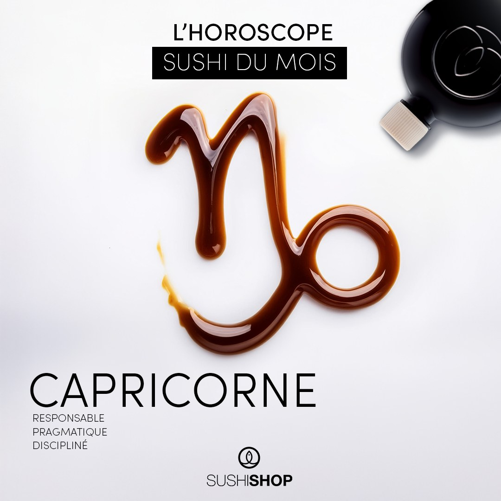
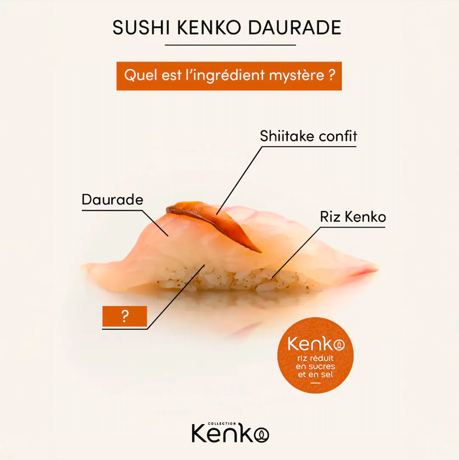
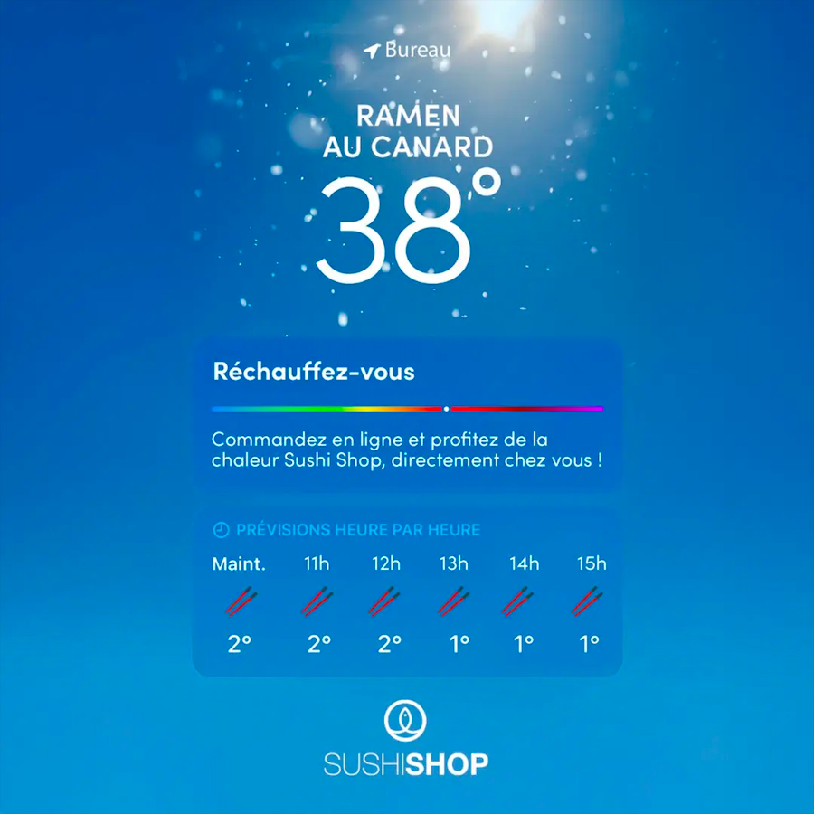
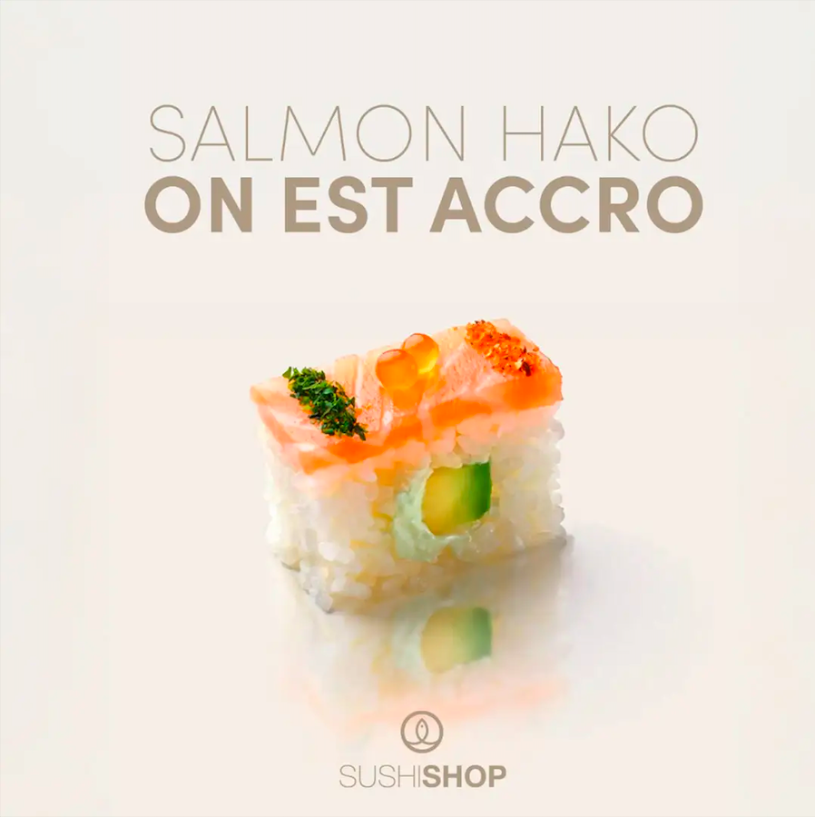
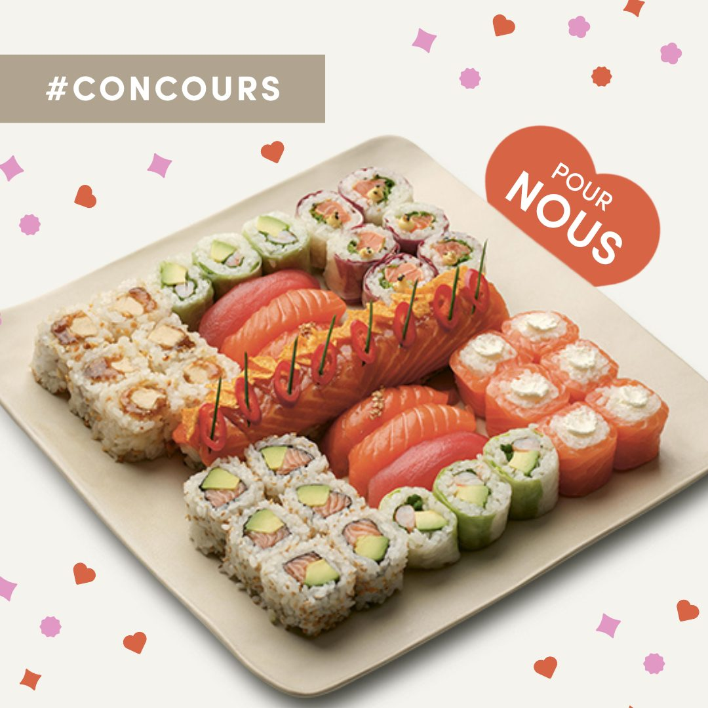
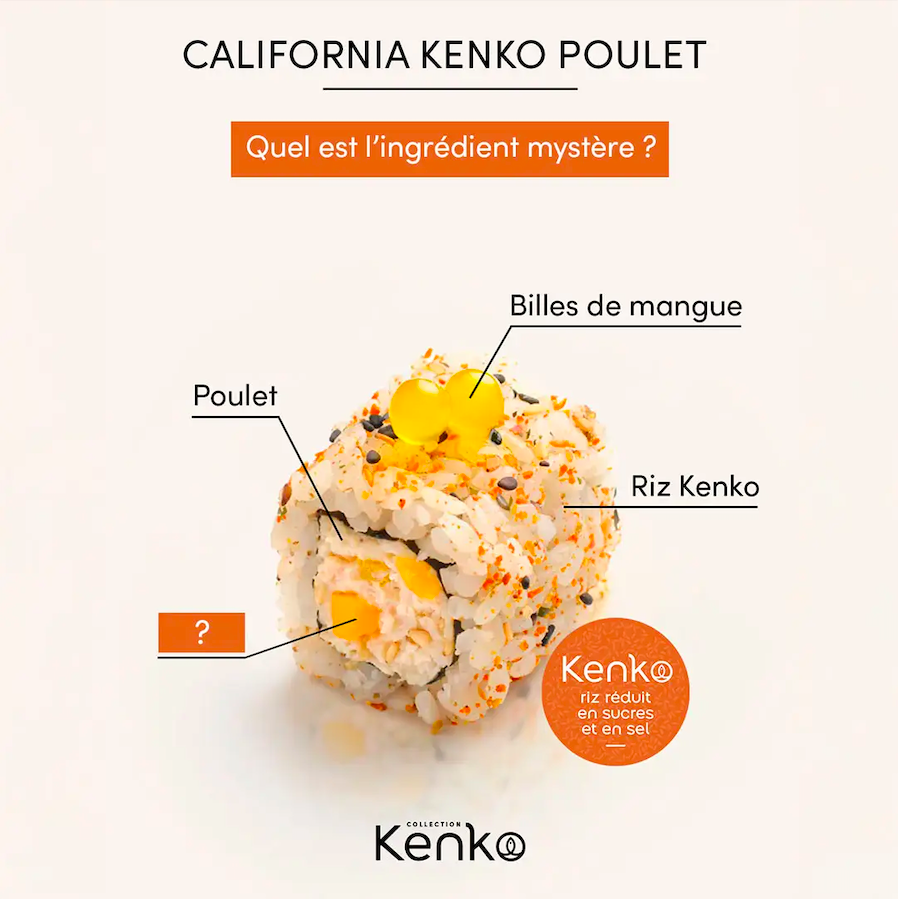
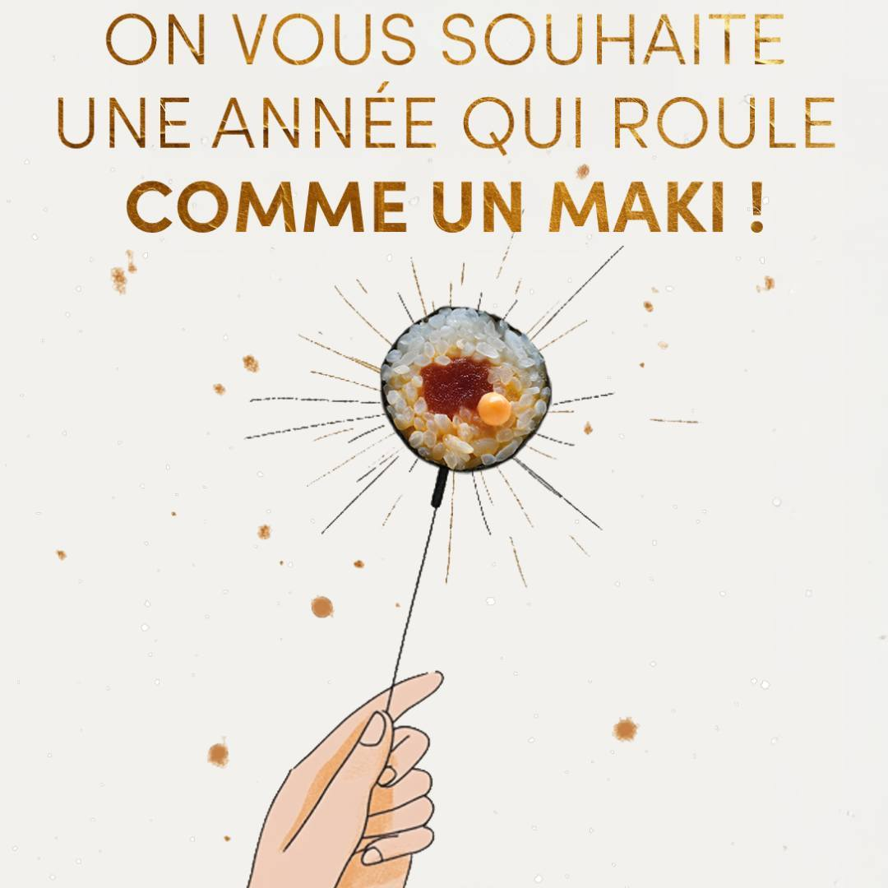
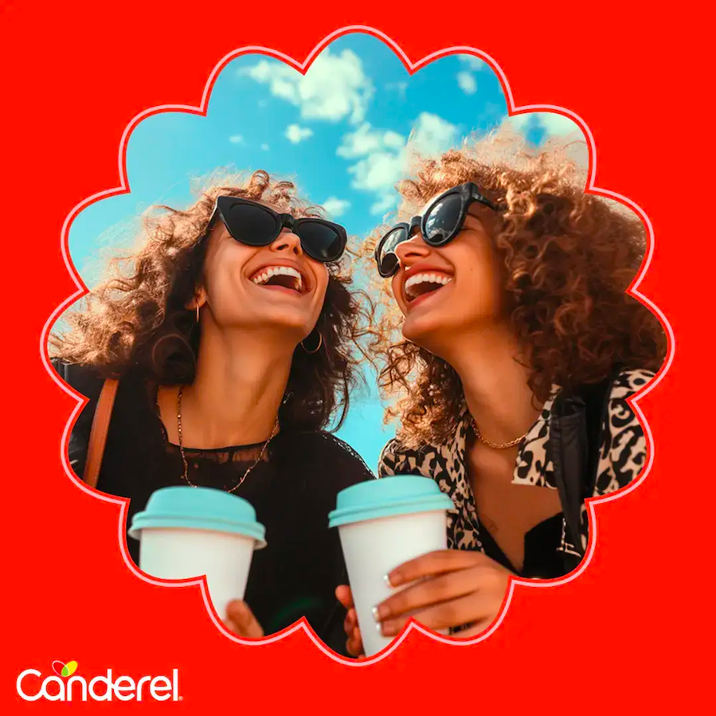
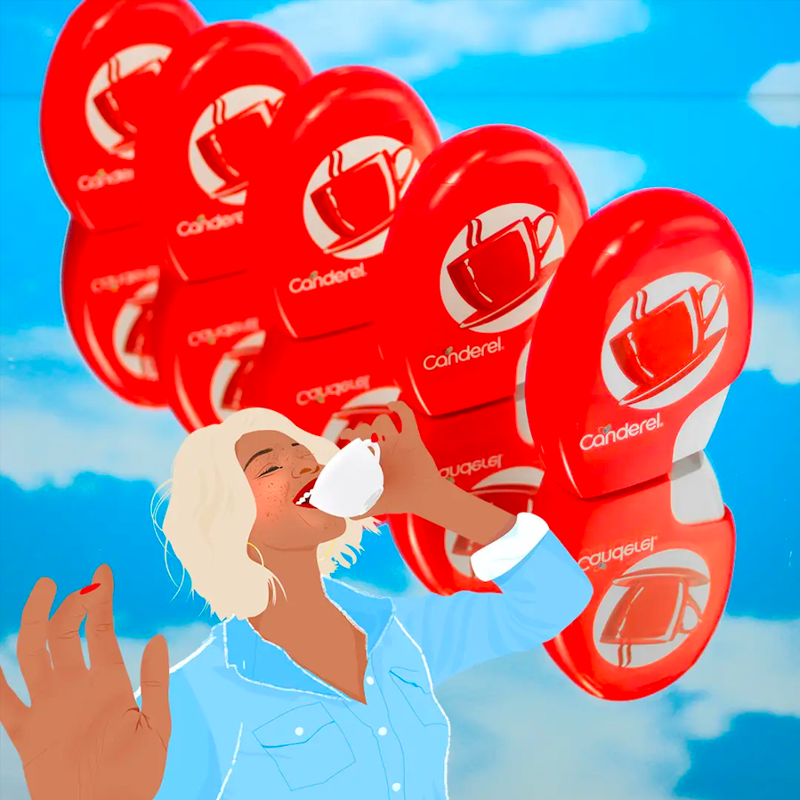
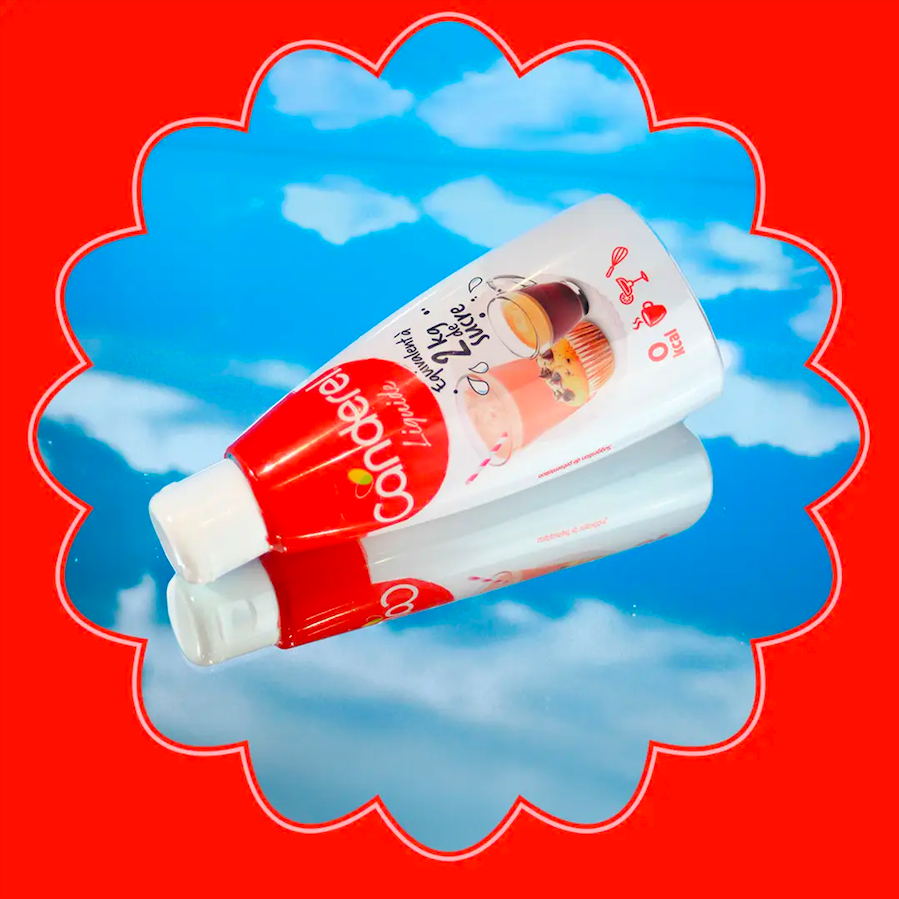

MORE WORKS
Social bento
Elevating Sushi Shop’s digital presence through high-volume, premium social assets. From motion design to static layouts, maintaining strict visual consistency, brand sharpness, and high-craft execution across all always-on touchpoints.







Sugar free,
still sweet
Global rollout and asset scaling for Canderel’s international “I’m Free” campaign. Delivering high-volume social content and digital adaptations across 10+ markets while preserving a sharp, modern visual standard.



Too warm for this
Shifting the perception of UGG from a winter essential to a year-round statement. For the SS23 collection, we bypassed traditional fashion styling in favor of creators with distinctive visual processes with CGI. Featuring talent Julia Dang, the campaign blends raw spring styling with sharp post-production to maximize social reach and redefine warm-weather comfort.